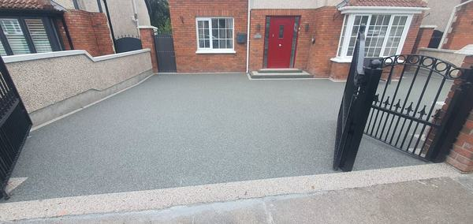
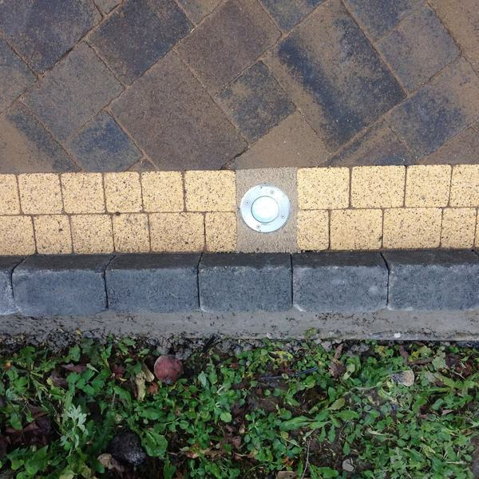
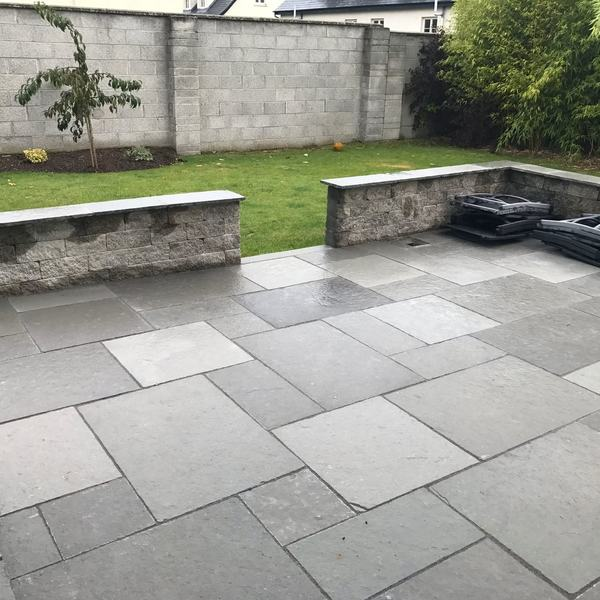

Porcelain Patios
Porcelain paving for patios.
Large porcelain slabs laid as a patio surface.
Limerick
The main work is porcelain patios, resin bound driveways, and microcement bathrooms and floors, for Limerick and surrounding areas.
Call for a FREE quotation with no obligation
Porcelain paving for patios.
Large porcelain slabs laid as a patio surface.
Resin bound stone for driveways.
A bound aggregate surface laid as a driveway.

Microcement for bathrooms and for indoor floors.
A microcement finish for bathroom walls and floors, and for other indoor floors.
Block paving for driveways, paths and yards.

Upkeep of existing driveways.
Kerbs for driveways, paths and paved edges.

Natural stone for paths, patios and driveways.

Concrete for paths, bases and hardstanding.
Patios in slabs, blocks or stone.

Paving slabs for patios, paths and entrances.

Decorative stone for gardens and outdoor surfaces.
Decking for outdoor seating areas.

Resin bound stone laid as an interior floor.
Artificial grass laid for lawns and garden areas.
Walls along a boundary.
Call for a FREE quotation with no obligation
Call 087 657 9874 eamonnglawlor@gmail.comLimerick and surrounding areas.